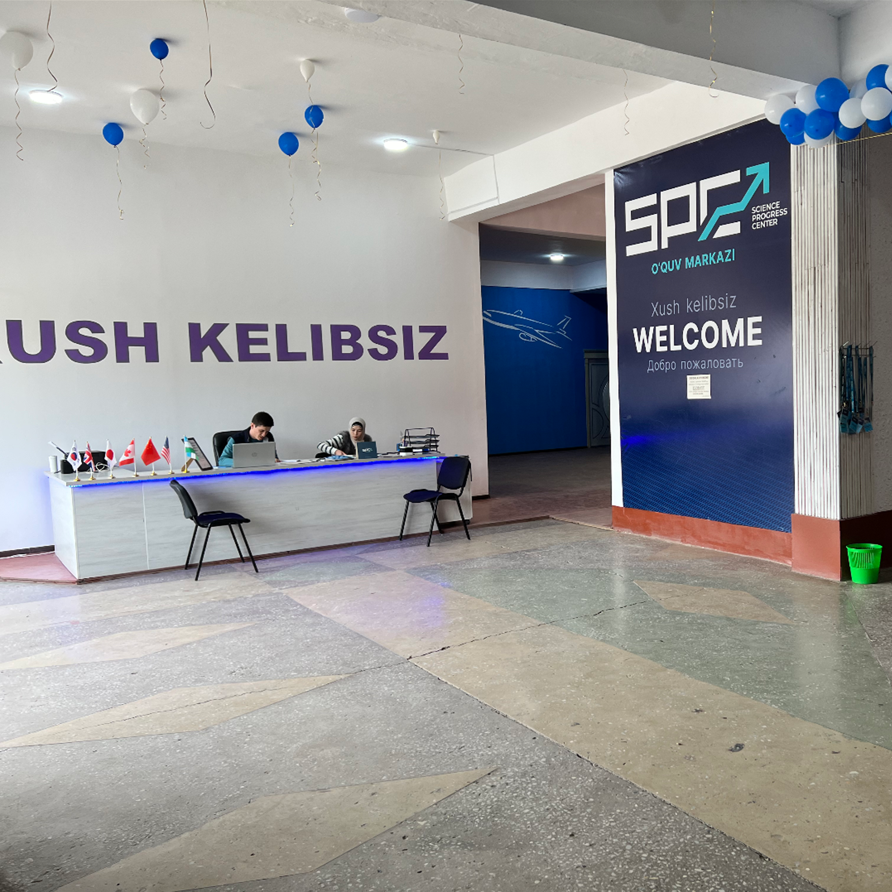
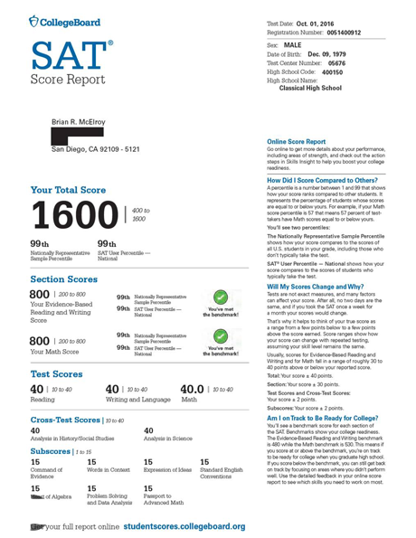
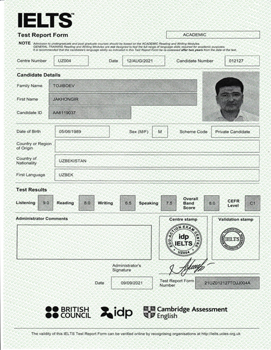
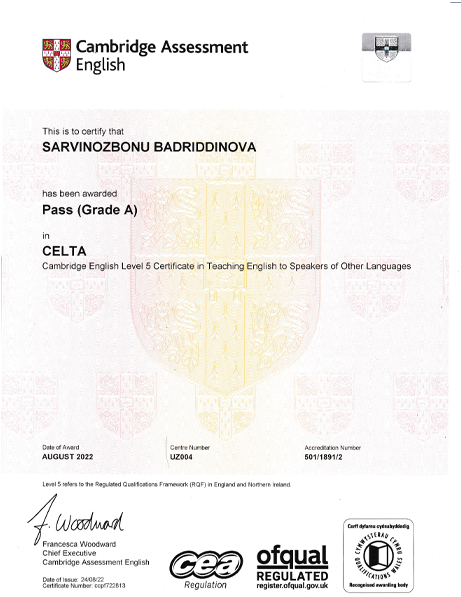

INGLIZ TILIDA YAXSHI NATIJALARGA ERISHMOQCHIMISIZ?
SPC siz uchun zo'r tanlovdir, hozir Bog'lanish tugmasini bosip biz bilan bog'lanip ro'yhatdan oting

Science Progress Center
Science Progress Center o’quv markaz sifatida o’zining faoliyatini 2004 yilda boshlagan. Hozirgi kunda Namangan viloyati bo’ylab 11 ta o’quv markazi va 2 ta xususiy maktabi mavjud. Science Progress Center viliyoyatdagi ilmga chanqoq yoshlarni qamrab olgan. Hozirgi kunda General English, IELTS, SAT, Rus tili, Koreys tili, PM va IM maktablari va DTM yo’nalishlarida yoshlarni o’qitib kelmoqda. O’quvchilarimiz IELTS sertifikatidan 8.0 ballni va SAT sertifikatidan 1510 ballni qo’lga kiritganlar.
Jamoa
300 dan ortiq malakali va IELTS 8.0 sertifikatiga ega ustozlar. 30 ta CELTA sertifikatiga ega ustozlar va TOPIK, GMAT, C1 sertifikatlariga ega ustozlar faoliyat yuritishadi.
Yo’nalishlar
General English : ( A1+ A2 B1 B1+ B2 B2+ C1) kurs davomiyligi 16 oy
Intensive IELTS kurs davomiyligi 3 oy
SAT kurs davomiyligi 4 oy
Rus tilli kurs davomiyligi 6 oy
Koreys tili kurs davomiyligi 8 oy
PM (Prezident maktablariga tayyorlov) kurs davomiyligi 12 oy
DTM kurs davomiyligi 12 oy
Bizning yutuqlarimiz



Bizning manzil va telefon raqamlarimiz
Isfarxon filiali
Manzil: Namangan shahar, Marg'ilon ko'cha 7-uy
Viloyat Soliq idorasi ro'parasida "SHARQ TABOBATI" binosi
Telefon raqam: +998930505200
Manzil: Namangan viloyati, Chust tumani, Chust shaxri, Kamolot to'yxonasi
Mo'ljal: Chust istiroxat bog'i yonida